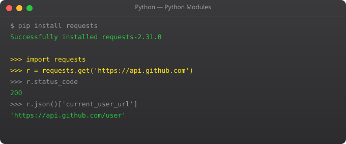

Programs that never fail are programs that never run in production. Real applications encounter network timeouts, malformed data, missing files, invalid user input, and database errors. Writing code that handles these failures gracefully is what separates programs that crash users from programs that recover and explain what went wrong.
try:
number = int(input("Enter a number: "))
result = 100 / number
print(f"Result: {result}")
except ValueError:
print("Please enter a valid integer")
except ZeroDivisionError:
print("Cannot divide by zero")
except Exception as e:
print(f"Unexpected error: {type(e).__name__}: {e}")import json
def load_config(filepath):
try:
with open(filepath) as f:
data = json.load(f)
except FileNotFoundError:
print(f"Config not found: {filepath}")
return {}
except json.JSONDecodeError as e:
print(f"Invalid JSON: {e}")
return {}
else:
# Runs only if no exception occurred
print("Config loaded successfully")
return data
finally:
# Always runs, exception or not
print("Load attempt complete")ValueError # Wrong value: int("hello")
TypeError # Wrong type: "2" + 2
IndexError # Index out of range: [1,2,3][10]
KeyError # Missing dict key: {}["key"]
AttributeError # No such attribute: None.upper()
FileNotFoundError# File does not exist
ZeroDivisionError# Division by zero
ImportError # Module not found
TimeoutError # Operation timed outclass ValidationError(Exception):
def __init__(self, field, message):
self.field = field
super().__init__(f"Field '{field}': {message}")
class UserNotFoundError(Exception):
def __init__(self, user_id):
super().__init__(f"User {user_id} not found")
def validate_age(age):
if not isinstance(age, int):
raise ValidationError("age", "Must be an integer")
if age < 0 or age > 150:
raise ValidationError("age", f"Value {age} out of range")
try:
validate_age(-5)
except ValidationError as e:
print(f"Field: {e.field}")
print(f"Error: {e}")import logging
import requests
logger = logging.getLogger(__name__)
def fetch_data(url, timeout=10):
try:
response = requests.get(url, timeout=timeout)
response.raise_for_status() # Raises for 4xx/5xx
return response.json()
except requests.Timeout:
logger.error(f"Timeout fetching: {url}")
return None
except requests.HTTPError as e:
logger.error(f"HTTP {e.response.status_code}: {url}")
return None
except Exception as e:
logger.exception(f"Unexpected error")
raise # Re-raise unknown errorstry: code that might fail. except: catches specific exceptions. else: runs only if no exception occurred. finally: always runs for cleanup. Use finally for closing files, connections.
Multiple except blocks, or one block: except (ValueError, TypeError) as e:. Use except Exception as e: as a last resort to catch anything. Never use bare except: without specifying the type.
class ValidationError(Exception): pass -- then raise ValidationError("message"). Add __init__ for custom attributes. Custom exceptions make error handling more specific and meaningful.
raise creates a new exception. Inside except, bare raise re-raises the current exception with its original traceback. Use re-raise to log but not swallow unexpected errors.
Catch only exceptions you expect and can handle meaningfully. Let unexpected exceptions propagate -- they indicate bugs that need fixing, not runtime conditions to handle.
In Part 10, we cover modules and packages -- organising code and using Python's rich ecosystem of libraries.
← Back to Blogfrom contextlib import contextmanager
import time
@contextmanager
def timer(label):
"""Context manager that times a block of code."""
start = time.time()
try:
yield # Code inside "with" block runs here
finally:
elapsed = time.time() - start
print(f"{label}: {elapsed:.3f}s")
with timer("Database query"):
time.sleep(0.1) # Simulate slow query
@contextmanager
def temporary_directory():
"""Create and clean up a temp dir automatically."""
import tempfile, shutil
tmpdir = tempfile.mkdtemp()
try:
yield tmpdir
finally:
shutil.rmtree(tmpdir)
with temporary_directory() as tmpdir:
print(f"Working in {tmpdir}")
# ... do work ...
# tmpdir automatically deletedimport logging
logging.basicConfig(
level=logging.INFO,
format="%(asctime)s - %(name)s - %(levelname)s - %(message)s",
handlers=[
logging.FileHandler("app.log"),
logging.StreamHandler() # Also print to console
]
)
logger = logging.getLogger(__name__) # Name-based hierarchy
def process_payment(amount, user_id):
logger.info("Processing payment", extra={"amount": amount, "user_id": user_id})
try:
result = charge_card(amount)
logger.info("Payment successful", extra={"transaction_id": result.id})
except PaymentError as e:
logger.error("Payment failed", exc_info=True) # Includes traceback
raise# Exception chaining: preserve context
try:
data = json.load(open("config.json"))
except FileNotFoundError as e:
raise RuntimeError("Config not found -- did you run setup.py?") from e
# ExceptionGroup (Python 3.11+): handle multiple exceptions
try:
async with asyncio.TaskGroup() as tg:
t1 = tg.create_task(fetch_data("endpoint1"))
t2 = tg.create_task(fetch_data("endpoint2"))
except* ConnectionError as eg:
for exc in eg.exceptions:
print(f"Connection failed: {exc}")
except* TimeoutError as eg:
print(f"{len(eg.exceptions)} requests timed out")
# Suppress specific exceptions
from contextlib import suppress
with suppress(FileNotFoundError):
os.remove("temp-file.txt") # OK if file does not existimport pytest
from unittest.mock import patch, MagicMock
from decimal import Decimal
# Test basic function
def test_calculate_tax_standard():
from myapp.billing import calculate_tax
result = calculate_tax(Decimal("1000.00"), rate=Decimal("0.18"))
assert result == Decimal("180.00")
def test_calculate_tax_zero():
from myapp.billing import calculate_tax
result = calculate_tax(Decimal("0"), rate=Decimal("0.18"))
assert result == Decimal("0")
# Parametrize for multiple test cases
@pytest.mark.parametrize("amount,rate,expected", [
(Decimal("1000"), Decimal("0.18"), Decimal("180.00")),
(Decimal("500"), Decimal("0.05"), Decimal("25.00")),
(Decimal("2500"), Decimal("0.12"), Decimal("300.00")),
])
def test_calculate_tax_parametrized(amount, rate, expected):
from myapp.billing import calculate_tax
assert calculate_tax(amount, rate) == expected
# Mock external dependencies
def test_send_invoice_calls_email():
from myapp.billing import send_invoice
with patch("myapp.billing.email_service") as mock_email:
mock_email.send.return_value = True
result = send_invoice(order_id=42, email="test@example.com")
mock_email.send.assert_called_once_with(
to="test@example.com",
subject="Invoice #42"
)
assert result is True# conftest.py -- shared fixtures for all tests
import pytest
@pytest.fixture
def sample_user():
return {"id": 1, "name": "Suraj", "email": "suraj@test.com"}
@pytest.fixture
def db_session():
"""Create test database session."""
from myapp.database import create_test_db
session = create_test_db()
yield session # Test runs here
session.rollback() # Cleanup after test
session.close()
# Use in tests
def test_user_creation(db_session, sample_user):
from myapp.models import User
user = User(**sample_user)
db_session.add(user)
db_session.flush()
assert user.id is not None